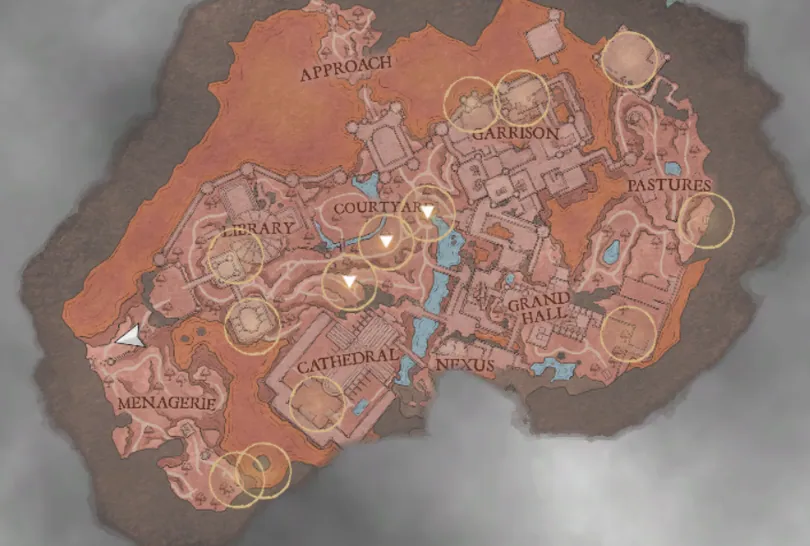
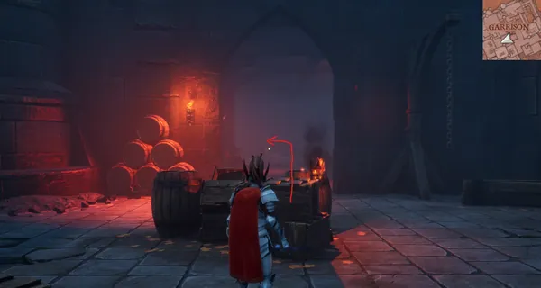
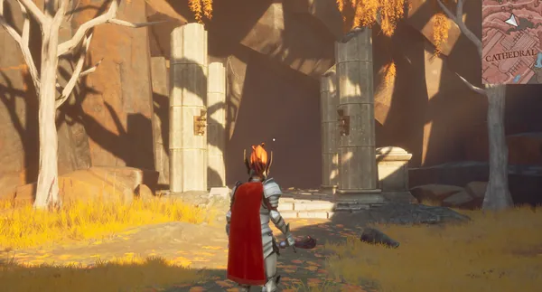
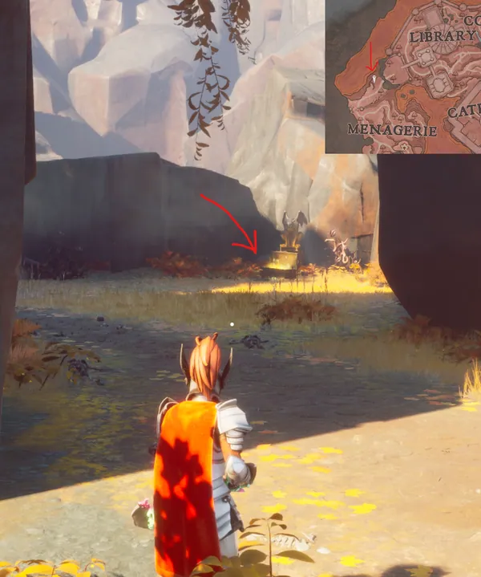

Black Knight's Fortress is the seventh primary quest and the third in the main storyline of RuneScape: Dragonwilds. In this quest, the Player must delve into an ancient mountainous fortress after defeating the revenant dragon Imaru in order to gain access to the Umbral Sands.
Quest Overview
- Withering Heights
- Level 41 Cooking to cook maple sap into maple syrup, or a maple toastie from a food salvage spot (1/24)
- Steel or Undead Spade
- Steel or Mithril Pickaxe
- Mithril Logging Axe
- Fishing Rod (Any, preferably highest available)
- 5 Maple Sap
- Good food, potions
- Good armour
- Multiple Black Knights
- Multiple mage of Zamorak
- Multiple hellhounds
- Four (different location) shardbound lesser demons
- Lesser demon
- Blue dragon
- Black Knight Titan
Walkthrough
Part I: The Dark Fortress...
Speak to Death in the Forgotten Temple. He will mention about how you did well in Fellhollow, but that there is more for you to do. A colleague of his is waiting for you in the Umbral Sands to help him, but instructs you to speak to Cathan to gather allies and investigate. You can find Cathan east of Fellhollow, near the ominous gatehouse in the south of Silverthorn Keep.
Speak to Cathan, who greets you, and he will comment about how the adventure never ends. He will then right to it and explain how he has been investigating the ominous gatehouse and, while it leads to some fortress, it is blocking the way to the Umbral Sands. He tells you how he wanted to scout out the place more all spooky-like, but made the mistake of mentioning it to the Wise Old Man. Knowing how he is like, Cathan mentioned about how he murmured some stuff like "amateur hour wards" and "rubbish defences" before storming down the passageway. Cathan will inform you that, if you want to go after him, to look for him in some sort of central point (like a nexus or something). Go through the open gateway and enter through the ominous door (Image right).
Note: This will play a small intro cutscene to the area.
You will then arrive within The Approach. Traverse southward through this new region until you enter The Courtyard where you will meet the Wise Old Man.
Part II: Shadows Within
Speak to the Wise Old Man, who will mention about how you had an easier time getting here than they did and walloping a few troublesome people. He'd then mention about how he was hoping to hunt down another dragon to whittle down Kuldra's forces, but complains about the fortress full of Zamorakians in the way. Despite the bothersome trouble in the way, he mentions how great it is that you're here to help get them moving again. Troubling thing is, he mentions how the way is blocked by someone called "the gatekeeper" and he isn't sure who or what it may be. Despite not being aware of who or what it is, the Wise Old Man tells you that Doric is currently working on dispelling a nasty magical barrier further ahead in the Nexus. He then says how it might be a good idea to make a base camp here first.
After making a base camp, follow the path leading up into the fortress. Arrive at The Nexus and speak to Doric. Once you speak to him, he will mention about how crazed the Black Knights are along with how they look like they should have all died long ago. He mentions how the problem is that you are all stuck here and he has everything to get the door open. As far as Doric can tell, everything seems to be connected to a great big stone next to him. He says that it looks broken and, theorising a way to get past the door, might need to fix it using some missing pieces. Inspect the stone.
This will reveal a small dialogue from the stone itself describing how it is broken, shards of itself are missing, and that you should find the missing pieces to repair it. It will then give you authorisation to look around the keep and to access the Nexus nodes scattered around Dowdun Reach.
Part III: Shard Hunting
Item(s) needed: Spade, Pickaxe, Logging Axe.






After inspecting the Dreaming Stone, you will discover that there are thirteen shards (marked on your map with yellow circles) that are needed to repair it. These shards are scattered throughout Dowdun Reach and require you to either interact with characters, scenery objects, or solve puzzles to acquire them. While most are above-ground, there are three that are kept underground. Once you have collected all thirteen shards, head back to the Dreaming Stone.
The Cathedral
| Location | Interact Type | Details |
|---|---|---|
| South-West | Cut down vines w/ mithril logging axe then standard interact | You can acquire the cathedral shard by heading south-west to a courtyard full of Zamorakian acolytes and mages and, using your mithril (or above) logging axe, cut down the vines. As the mages and acolytes are hostile by default, you will need to take them down first. |
The Garrison
| Location | Interact Type | Details |
|---|---|---|
| East | Defeat Sergeant Blister | He is located underground in The Garrison region, protected by two hellhounds and a small host of skeletons. The requirements to interact/collect this shard are the same as defeating the shardbound lesser demons. |
| West | Standard interact | Climb the tower to the east of the circle. Navigate past the elite Black Knight and two Zamorakian acolytes to an open wall with some wooden boards. Use the Windstep spell to jump up and across to the nearby adjacent tower. Once you have arrived, either defeat or avoid the elite Black Knight to interact with the shard. |
The Grand Hall
| Location | Interact Type | Details |
|---|---|---|
| East | Interact with Spittletoe | Spittletoe instructs you to collect five Maple Sap. Once you provide the sap, Spittletoe will trade you the shard. |
| Grand Hall shard steps |
|---|
If you do not have the maple sap, look for maple trees and chop them down till you get one |
The Library
| Location | Interact Type | Details |
|---|---|---|
| North-West | Defeat 2x shardbound lesser demon | Open the library door by interacting with (in order) the following books:
Note: You can make it easier to take them down by leading them up the spiral staircase and safespotting them with ranged attacks from on top of the library door. |
| South-West | Interact with Valerius | Go to the top of the staircase (a floor above where Valerius can be found) and West, past the blue dragon, and veer right as soon as you pass under the cliff. Equip your spade and dig in front of the gargoyle statue to uncover the glass owl. Return this item to Valerius to acquire this shard. |
The Menagerie


| Location | Interact type | Details |
|---|---|---|
| South |
|
Find three levers to unlock the door.
This area is guarded by a lesser blue dragon. |
| South-East | Standard interact | Follow along the lower area cliffs to reach an area where you can jump across. You'll also locate a group of hellhounds on your way there, but you can either ignore them or defeat them until you locate a series of beams. Traverse the beams by jumping up to the next level until you reach the top where you'll need to jump across to the stone rock where the shard is located. Note: You'll need plenty of air runes to use Windstep for this particular jumping puzzle.
An alternative way is to equip your leggings of lightness and use Windstep from where you received the previous shard from finding the three levers, down to the cliffs. Be sure not to jump and head down, instead, fall with the spell and the leggings to avoid damage. |
The Pastures
| Location | Interact Type | Details |
|---|---|---|
| North | Mine a granite deposit | Reach the highest part of the goblin-infested fortress. In the middle of the area, there is a granite deposit that hides the shard.
You can either avoid or defeat the blue dragon here to get to the shard, but you can use the Rocksplosion spell to quickly interact with the shard. |
| East | Interact button | Defeat the goblins in the immediate area of the shard before interacting with it. |
Underground Shards
These are located underground, they can be completed in any order.
The Crypt (underground)
| Location | Interact Type | Details |
|---|---|---|
| The Crypt | Dig with spade/shovel | Navigate to The Crypt in the underground region. Before searching for the shard, defeat the zogre here. This will save you trouble later.
Interact with the note next to the goblin corpse to learn that the shard is buried in a grave. Dig at any of the graves until you uncover the shard. Note: The location of this shard is randomized for every world. |
The Demon Gate (underground)
| Location | Interact Type | Details |
|---|---|---|
| The demon gate | Defeat 2x shardbound lesser demon | Navigate to the lowest part of the region. There is a lever-activated elevator that will take you down to the demon gate region. For easier traversal later, interact with the nearby nodestone to connect it to the Nexus.
Navigate through the pathways until you reach the stone structure and defeat the two lesser demons guarding the shard. |
The Lake (underground)
| Location | Interact Type | Details |
|---|---|---|
| The Lake | Speak with Offalfoot | He will ask you to give him one of the fish nearby (requires an empty inventory slot), so you'll need to grab one from the nearby pool of fish. This will give you an unusual trout and give this trout to Offalfoot. He'll give you the shard.
Note: You do need a fishing rod (the highest level is recommended) and this can be done with level 1 Fishing. You will encounter Delrom when traversing to through this location. |
Part IV: Remember the Titans
Interact with the Dreaming Stone. It will say that it is restored, but it will reveal that it was evil! It will claim that its name will rattle in your tiny skull like the echoes within a cave. The Dreaming Stone then reveals its name to be Avisk the eternal whose mind had ever graced the Aughra, but as it tries to enslave you and become its thrall, it seemed stunned. This will reveal two dialogue options (both of which are about destroying the stone), but choose option one. This will force the crystal to acknowledge your logic and, in its own way, apologise for being overzealous and how it happens when you've been alone in the psyche of Black Knights for too long. It then blames the Cthonian before taking down the barrier.
It then warns you to be wary of Lord Rasmodel (aka the Black Knight Titan) as it had a bit of a mishap when he smashed the Dreaming Stone to pieces. Now, he's got some of the Dreaming Stone , some of a demon, and a whole lot of anger issues. End the dialogue and the Dreaming Stone will be fully repaired.
Interact with the newly-dropped Barrier and you'll arrive in The Bastion. Head up all the stairs (be mindful of some gaps which can be Windstepped) until you reach the top. Enter into the Bastion building and, just past a barrier, slay the boss. Interact with the barrier to fight the Titan. After defeating him, return to the Dreaming Stone.
Note: The barrier may not allow you to teleport through if you have not unblocked all of the nodestones; with the exception of The Bastion.
Part V: To the Umbral Sands!
Talk to the Dreaming Stone/Avsik. It will remark how impressive it was that you slew the Titan and that when he finds himself a new body to walk among the world again, he'd like for you to work with him. Aside from that, he remarks about how the gate to the Umbral Sands hasn't been opened in a long time, so he'll need time to get it unstuck. He also pleads for you to be patient - and to stay your hammer - as he will help get you into the desert soon. He then gives you a reward (read: bribe) for not smashing him to pieces with your hammer.
Congratulations! Quest Complete!
Rewards
- 1x Black Knight's Fortress reward pack
- 1x Tome of the Titan
- +750 XP to Magic, Ranged, and Attack
- 1x Titan's wrath
- 1x Tome of the Titan
- Recipe to creating the Titan's wrath 2h sword
Required to Complete
This quest is required to complete the following:
Trivia
- The quest's name is inspired by RuneScape's and Old School RuneScape's variant of the quest.
- In RuneScape the quest was replaced by The Death of Chivalry on 13 August 2013.
- It is the third quest in the game's Early Access, also known as Kuldra's Saga.
This guide is the wiki's Black Knight's Fortress article, by its editors, reformatted for this site. Licensed CC BY-NC-SA 3.0.